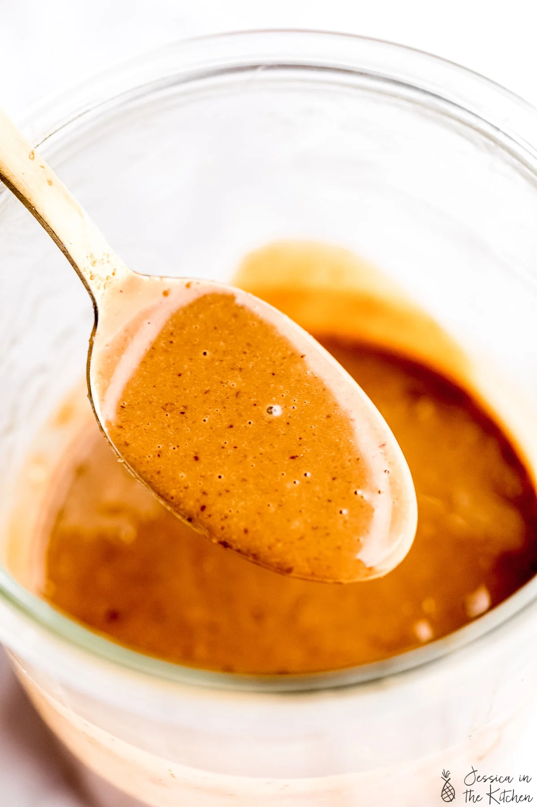

Meow Kitchen
Thai Peanut Sauce
This Thai Peanut Sauce Recipe is incredibly versatile and can be used as a dip, a dressing, a marinade or a sauce! I love using it in so many ways, and it only takes 5 minutes to make!

How to make peanut sauce
Making the sauce is so easy. Blend all the ingredients together, and that’s it! You can mix them by hand with a whisk, in a jar with a lid, or in a food processor or blender.
Ingredients
- 1/3 cup natural peanut butter if your peanut butter is thick, microwave is for about 15 seconds first
- 1/4 teaspoon ground ginger or 1/2 teaspoon freshly minced ginger
- 1 tablespoon maple syrup
- 2 tablespoons low sodium soy sauce
- 1 teaspoon rice wine vinegar
- 1/2 teaspoon sesame seeds
- 2 tablespoons to 1/4 cup hot water
- 1/4 teaspoon crushed red pepper flakes, optional
Instruction
- Whisk all the ingredients (minus 2 tablespoons of the hot water) together in a bowl, a jar with a lid (shake vigorously) or a small blender or food processor until smooth.
- Add the extra water a little at a time depending on whether you need this for a sauce, dip or a dressing to your desired consistency.
- This can be made ahead of time and stored in the fridge, or used immediately!
See Further more recipes below